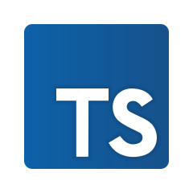
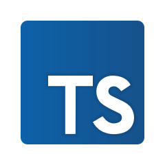
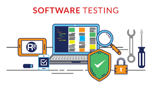
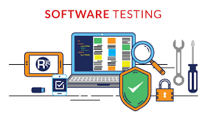

About Me
Hello, my name is Dereck and I've been in tecknology since when I was a kid. Majored in Electronic Engineering in 2017 at University of Pernambuco (UPE) and currently studying System Development at CESAR School. At the moment, I'm working as Software Test Engineer at CI&T.
More About Me
My journey started in 2016 when I got my first inter an intern of Embedded System Development at Recife City Hall. After that I joined a summer job at CESAR, a company from Recife witch is technology and innovation reference. Due to my performance there, I could land my first internship with Software Testing. Spent almost one year as a Software Tester intern at CESAR, I move to Autria due to Personal Reasons. In 2019 I returned to Brazil and landed a job as a QA at MV, a company from Recife that works with health technology. There I could have my frist automation touch involving testing a mobile application. Then, after about 10 months, joinedliferay where I could work with manual, automation and also trainning new team members. After that, I had an opportunity to work at CESAR again. In this second time at the compaby I could have a strong development in my career, participating in choosing the best framework to start an E2E automation, learned how to automate in another layers instead of only E2E, started to review PRs along with the Dev team and so on. Currently, I'm seeking to improve my hard and softskills and maybe in the future, explore different areas in the IT world.
Apart from my professional life, I'm a Perfume enthusiast onwing different fragrance in my collection even those that are no longer manufactured. Love playing video-games in my free time, spending time watching movies and videos on Youtube with my girlfriend and, sometimes, hanging out with my friends at a bar or something similar. To sum up, I'm passionated about learning new things and always looking forward to starting new challenges.
My top Skills
 


 
